3 测序技术
本章提要
本章围绕测序技术和原始数据展开：先理解不同实验测到了什么，再认识以 Illumina 为代表的第二代测序、MGI，以及 PacBio 与 Nanopore。随后把高通量文库构建与 FASTQ 等数据存储方式联系起来，学习阅读 FastQC 报告、去除接头和常见的数据清理操作。长读长部分以原理和用途概览为主。通过这些内容，希望你能说明原始数据的来源，读懂质量信息，并解释每一次数据处理的目的。
3.1 不同测序实验究竟测到了什么
避免把不同实验的 reads 当作同一种生物学测量。
本节内容待补充。
3.2 以Illumina为代表的第二代测序技术
理解接头、索引、双端测序和测序错误如何影响数据。
高通量测序技术基础
Illumina 测序技术原理
目前我们接触到的很多生物信息学的技术，都是基于NGS技术的，比如RNA-Seq，ChIP-Seq，FAIRE-Seq，ChIA-PET，Hi-C等等。所谓的NGS就是Next Generation Sequencing，翻译为“下一代测序技术”，或者是“第二代测序技术”。之所以这么叫，是因为相比较于第一代测序技术其测序通量有了很大的提升。
二代测序的发展过程中出现过 Roche 454、Illumina 等不同技术路线。本节以 Illumina 的边合成边测序为例，解释文库、簇和测序循环如何产生 reads。图中的 X Ten 属于原稿写作时期的仪器示例；不同平台的通量、读长和流动槽结构应查对应型号的说明书。
一些常用基本概念的介绍
- flowcell（流动槽）是测序反应发生的位置；lane 数目随仪器和流动槽型号变化
- lane（泳道）是流动槽内的反应区域，具体结构取决于平台
- tile 每一次测序荧光扫描的最小单位
- read 指一次读取获得的序列，复数为 reads
- bp base pair 碱基对，用于衡量序列长度
- 双端测序 指从同一插入片段的两端分别读取，例如一个 500 bp 的插入片段两端各读 150 bp
- 未读取区间 在上述例子中，中间还有约 200 bp 未被两端的 reads 覆盖；这段区间不称为 junction。RNA 比对中的 splice junction 通常指剪接连接位点
- adapter 就是测序中需要的一段特定的序列，有类似于引物的功能
- primer PCR中的引物
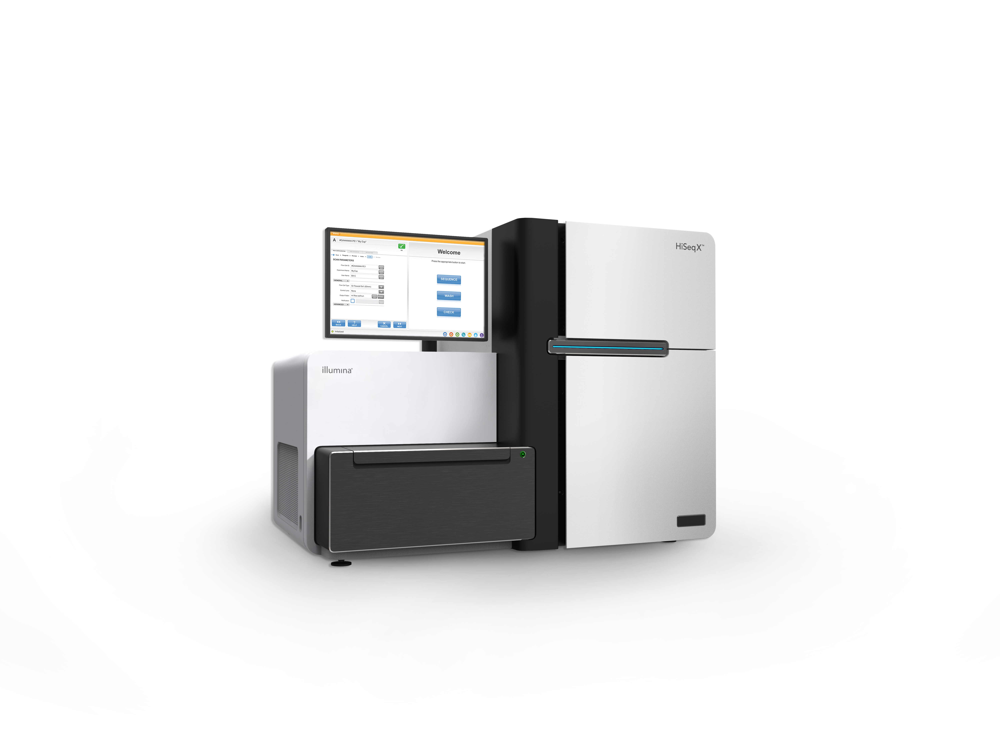
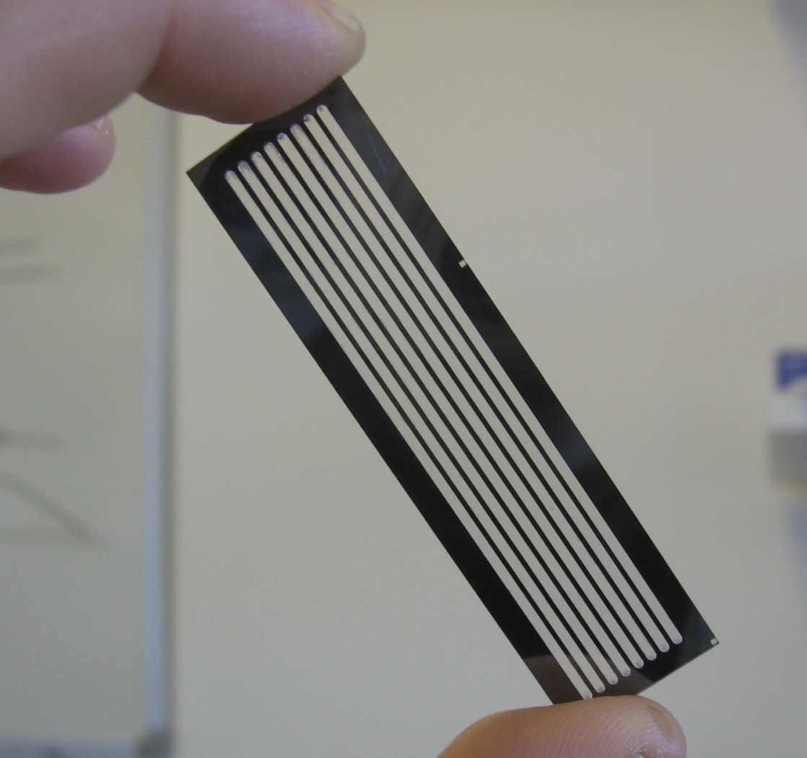
桥式PCR
将上述的DNA样品调整到合适的浓度加入到flowcell中，再加入特异的化学试剂，就可以使得序列的一端与flowcell上面已经存在的短序列通过化学键十分强健地相连，如下图。图中不同的颜色表示的是两种不同的adpater，分别对应序列之前加入的两种adpater
连接以后就正式开始桥式PCR。首先进行第一轮扩增，将序列补成双链。加入NaOH强碱性溶液破坏DNA的双链，并洗脱。由于最开始的序列是使用化学键连接的，所以不会被洗。
加入缓冲溶液，这时候序列自由端的部分就会和旁边的adpater进行匹配。
进行一轮PCR，在PCR的过程中，序列是弯成桥状，所以叫桥式PCR，一轮桥式PCR可以使得序列扩增1倍。
如此循环下去，就会得到一个具有完全相同序列的簇，一般叫cluster。
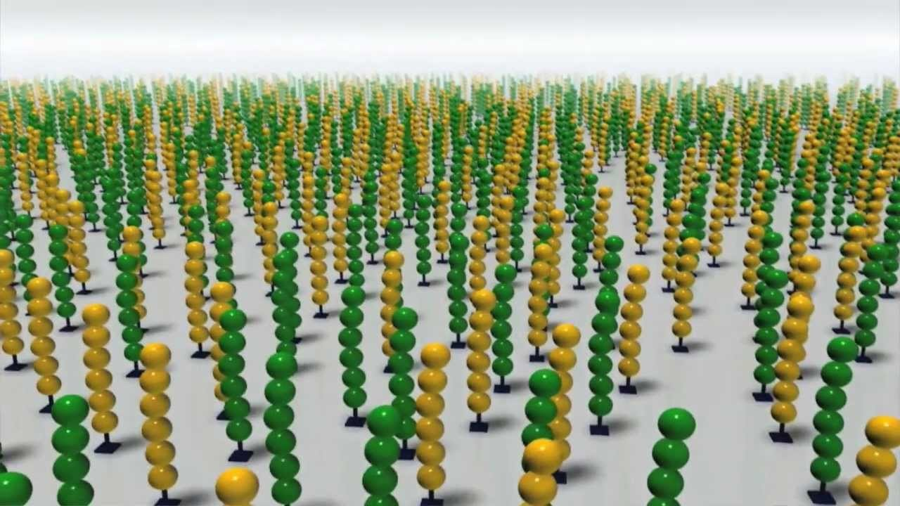
桥式PCR的整体流程大体如下：

形成这种1个cluster，1个cluster的形态，在整个flowcell中看上去，示意图如下。其中的每1个cluster就算是1群完全相同的序列。
测序
测序时，聚合酶沿模板延伸引物，加入带有可逆终止基团的核苷酸，使一轮反应主要延伸一个碱基。仪器根据荧光信号判断本轮加入的碱基，再解除终止并进入下一轮。不同代际平台的荧光编码和化学体系有所不同，不能都理解为四种碱基各自发出一种颜色。
下图保留原稿的核苷酸示意图，原图来源：http://www.oezratty.net/。具体可逆终止基团以对应化学体系为准；原稿关于“−N2 叠氮基团”的说明不成立。
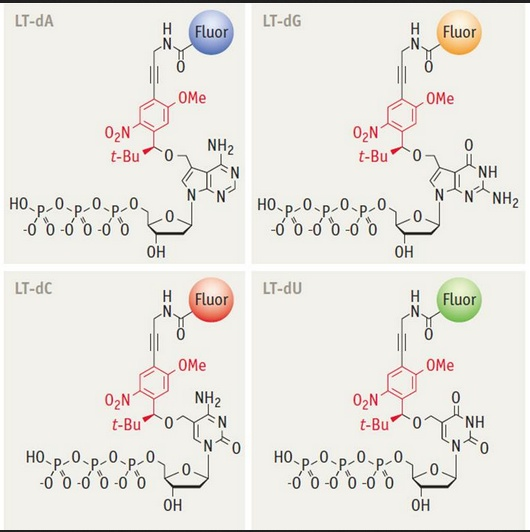
在测序过程中，每1轮测序，保证只有1个碱基加入的当前测序链。这时候测序仪会发出激发光，并扫描荧光。因为一个cluster中所有的序列是一样的，所以理论上，这时候cluster中发出的荧光应该颜色一致。一个测序扫描图片如下：
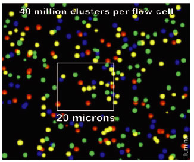
成像后，解除可逆终止并清除本轮检测信号，使下一轮可以继续延伸。循环进行，即可从信号序列推断碱基序列。
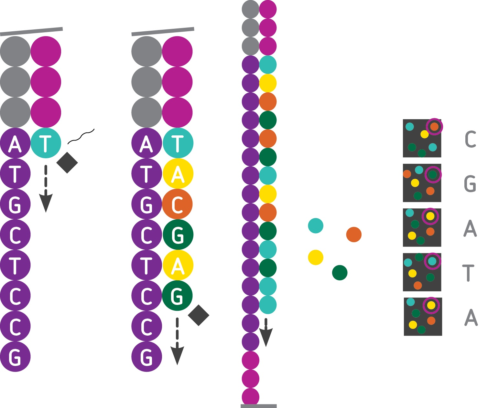
限制Illumina测序会有长度的原因，主要是下面2点：
测序循环中，不同模板分子的延伸可能逐渐失去同步（phasing 或 pre-phasing）。这里的测序延伸不等于反复进行 PCR。通俗一点讲，比如一开始1个cluster中是100个完全一样的DNA链，但是经过1轮增加碱基，其中99个都加入了1个碱基，显示了红色，另外1个没有加入碱基，不显示颜色。这时候整体为红色，我们可以顺利得到结果。随后，在第2轮再加入碱基进行合成的时候，就变成了，之前没有加入的加入了1个碱基显示红色，剩下的99个显示绿色，这个时候就会出现杂信号。当测序长度不断延长，这个杂信号会越来越多，最后很有可能出现，50个红，50个绿色，这时候我们判断不出来到底是什么碱基被合成。
测序过程中，使用的碱基是特殊处理的，有一个非常大的荧光基团修饰。在使用DNA ploymerase的时候，酶的状态也会受到底物的影响，其活性也越来越差。实际读长还受化学稳定性、信号质量和解码方法等因素影响，不能把所有平台归为“荧光淬灭原理”。
知识问答 2：Sanger 与 Illumina 测序原理
现在我们实验室或者公司常用第1代测序与第2代测序，那么：
1. 第1代测序 sanger 测序法的原理是什么？通量比较低的核心原因是什么？
sanger法测序及双脱氧链终止法，它采取DNA复制原理，通过在DNA复制过程中添加双脱氧三磷酸核苷酸（ddNTP）终止DNA链的延伸，在DNA链不同位置的延伸终止判断该位置的碱基类型。但是凝胶电泳的时间较长，导致sanger法测序通量低。
2. 作为2006年正式发布的illumina测序技术，或者称为第2代测序技术的代表性技术，其最大的特点是什么？
高通量，成本低，但测序长度较短。
3. Illumina测序技术的核心是什么？
核心内容有两个，一个是桥式PCR，主要用于扩大信号；另一个是4色荧光可逆终止反应，使illumina测序可以实现边合成边测序的技术。
4. Illumina测序技术为什么不能像第1代测序技术一样测500bp以上？
主要的原因有两个，一方面测序时，经过长时间的PCR，会有不同步的情况。比如一开始1个cluster中是100个完全一样的DNA链，但是经过1轮增加碱基，其中99个都加入了1个碱基，显示了红色，另外1个没有加入碱基，不显示颜色。这时候整体为红色，我们可以顺利得到结果。随后，在第2轮再加入碱基进行合成的时候，之前没有加入的加入了1个碱基显示红色，剩下的99个显示绿色，这个时候就会出现杂信号。当测序长度不断延长，这个杂信号会越来越多，最后很有可能出现50个红，50个绿色，这时信号不足以判断碱基类型；第二就是测序过程中合成酶的活性越来越不稳定，后面碱基添加出现问题。
知识问答 4：SBS 与测序误差
1. Illumina目前主流的测序仪都有哪几种型号？各自大概的通量是多少？（也就是1个run能跑出多少数据）
目前主流的测序仪及其通量主要是Hiseq2500（50-1000Gb）、Hiseq3000（125-750Gb）、Hiseq4000（125-1500Gb）、Hiseq X Five（900-1800Gb）和Hiseq X Ten（900-1800Gb），
2. Illumina目前的测序技术，最核心的就是边合成边测序，即我们常说的 Sequencing by synthesis （SBS），那么为什么能够实现SBS？
经过桥式PCR之后同一段序列已经成簇，下一段就是开始进行测序，这一步比较简单，就是加入primer，然后添加经过特殊处理的ATCG四种碱基，特殊的地方有两点：一个是碱基部分加入了荧光基团，可以激发出不同的颜色，另一个是脱氧核糖3号位加入了叠氮基团而不是常规的羟基，这个叠氮集团保证了每次只能够在序列上添加1个碱基.
这样每1轮测序，保证只有1个碱基加入的当前测序链。这时候测序仪会发出激发光，并扫描荧光。因为一个cluster中所有的序列是一样的，所以理论上，这时候cluster中发出的荧光应该颜色一致。随后加入试剂，将脱氧核糖3号位的—N2改变成—OH，然后切掉部分荧光基团，使其在下一轮反应中，不再发出荧光。如此往复，就可以测出序列的内容。
3. 我们在第1问中，问了大家一个问题“Illumina测序技术为什么不能像第1代测序技术一样测500bp以上？”，这里面主要涉及到两种错误，一种叫phasing，一种叫pre-phasing，分别是什么意思？
通俗来讲phasing表示本来同步添加的碱基有一些没加上，而pre-phasing则是加多了，都会导致当前bp的荧光检测出现噪音，造成phasing的主要原因是合成酶的活性降低，而pre-phasing则可能是叠氮基团性质不稳定，转化为羟基在一步检测中添加了不止一个碱基。
3.3 MGI测序技术
华大智造测序仪
本节内容待补充。
本节内容待补充。
3.4 PacBio与Nanopore
知道何时短读长不足，并正确理解长读长技术的输入输出。
PacBio
本节内容待补充。
Nanopore
本节内容待补充。
全长转录组测序
前文的短读长 RNA-seq 通常先把 RNA 转成 cDNA，再进行文库构建。长读长技术可以减少把一个转录本拆成许多短片段后再推断结构的困难，因此特别适合理解转录本异构体。
PacBio 的 SMRT 测序观察聚合酶合成 DNA 时的荧光信号。Iso-Seq 分析的是由 RNA 逆转录得到的全长 cDNA，不能称为直接 RNA 测序。Oxford Nanopore 则根据核酸链通过纳米孔时的电流变化推断序列，既有 cDNA 测序，也有直接 RNA 测序；其常用平台不依靠外切酶逐个切下碱基再读取。
长读长、准确度、通量和定量性能需要结合具体平台、化学版本和建库方案讨论，不能用原稿时期的单一数值概括。PacBio、Nanopore 和直接 RNA 测序的进一步比较、示例数据与练习待完善。
3.5 高通量文库构建
建库
短读长测序每次只能读取有限长度，因此需要先把待测核酸制成适合平台的文库。下面以片段化的 DNA 文库为例：先把较长的 DNA 打断，再通过片段筛选控制长度分布。原稿以 300—500 bp 的插入片段举例；实际范围应按建库方案、读长和研究目的确定。
打断以后会出现末端不平整的情况，用酶补平，所以现在的序列是平末端。
完成补平以后，在3’端使用酶加上一个特异的碱基A
加上A之后就可以利用互补配对的原则，加上adapter，这个adpater可以分成两个部分，一个部分是测序的时候需要用的引物序列，另一部分是建库扩增时候需要用的引物序列
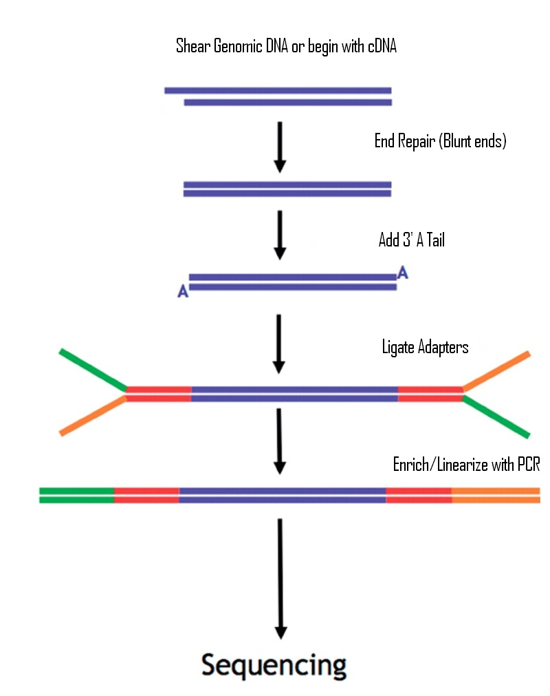
知识问答 3：接头、扩增、索引与测序结构
目前我们最常使用的就是Illumina公司的测序技术，Illumina公司的测序技术最明显的几个特点是：价格低，通量高，测序读长短。那么我们今天的问题，就是围绕Illumina测序技术的细节来提问的。
1. 什么是Illumina测序adapter？同一批上机的adapter序列一样吗？它的作用是什么？
adapter的中文意思为适配器或者接口，在illumina测序过程中关键一步是将文库片段固定在flowcell上，然后通过桥式PCR将片段扩增，在被打断成300~500bp的长度的片段末端被补平后adaptor将被添加到片段两端，一方面用于将片段固定在flowcell上，同时adaptor中还包含桥式PCR所需要的引物
2. 一个完整的Illumina测序过程是那几步？
完整的测序过程仅包含两步，第一是桥式PCR扩增，第二是以4色荧光可逆终止反应为核心技术的测序；
3. 什么是桥式PCR技术？为什么要进行桥式PCR？
加上adaptor之后的DNA样品与flowcell上固定的oligo（寡链核苷酸）匹配后就被固定在flowcell上，通过桥式PCR进行扩增成cluster,便于后面的荧光测序，主要步骤为：
- 进行第一轮扩增，将序列补成双链。加入NaOH强碱性溶液破坏DNA的双链，并洗脱。由于最开始的序列是使用化学键连接的，所以不会被洗。
- 加入缓冲溶液，这时候序列自由端的部分就会和旁边的oligo进行匹配 进行一轮PCR，在PCR的过程中，序列是弯成桥状，所以叫桥式PCR，一轮桥式PCR可以使得序列扩增1倍 如此循环下去，就会得到一个具有完全相同序列的cluster
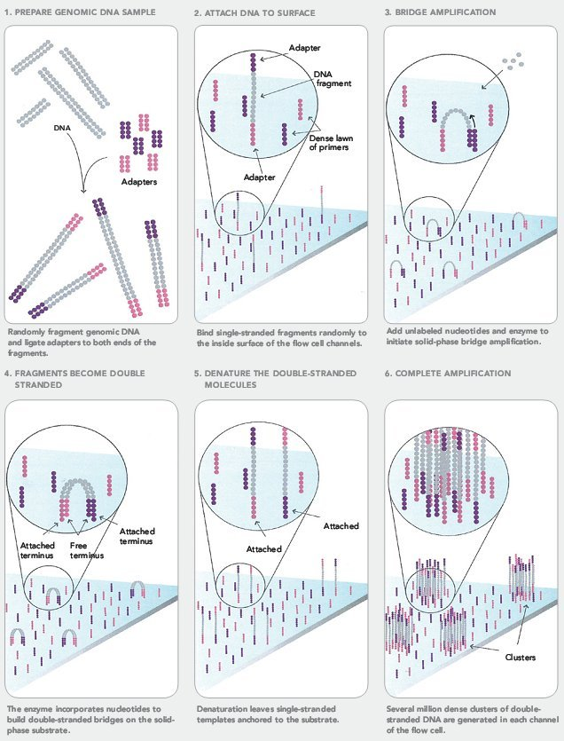
引用自：http://www.intechopen.com/source/html/49419/media/image2.png
4. 我们都说，测序结果会包含index，那么index是什么？有什么作用？
一条lane能测得的数据量在30G左右，而一个样品的测序量一般不会这么大，所以在建库的时候对每一种样品的接头加上不同的标签序列，这个标签就叫做Index，有了index就可以同时在一个lane中测多种数据了，后期可以根据index将数据分开；
5. 我们所说的flowcell，lane，tile都是什么意思？
- flowcell 是指Illumina测序时，测序反应发生的位置，1个flowcell含有8条lane
- lane 每一个flowcell上都有8条泳道，用于测序反应，可以添加试剂，洗脱等等
- tile 每一次测序荧光扫描的最小单位
引用自：http://41j.com/blog/2012/04/nextgen-sequencing-primer/
6. Illumina测序结果质量表示方法采用的是Phred33还是Phred64？
最新的测序质量结果一般都为Phred33，但是早期的测序数据可能出现Phred64。
知识问答 5：接头、引物与双端建库
Hello大家好！
上周我们已经把Illumina测序的基础内容基本搞清了，那么本周的问题我们主要是为围绕着测序后续的质控与建库细节来进行。
今天我们提出的问题是Illumina目前常用的双端测序建库办法中，会在打断的序列前后加上adapter，请问：
1. adapter是什么意思？adapter与primer有什么区别？
adapter在中文是适配器或者接口的意思，在前面的内容中已经提到将测序序列打碎成片断后要将末端补平然后添加adapter，用于与flowcell上的oligo匹配固定并为后续桥式PCR做准备，而前面提到的Index与adapter之间的位置关系一般为adapter1-Index-fragment-adapter2，adapter2通过与oligo互补连接在flowcell上，在进行完桥式PCR之后进行测序时，添加primer，这一段primer的序列是与Index互补的而非adapter1，所以最终拿到的测序结果应该是Index+fragment+adapter2或者Index+部分fragment
2.比如最终的测序结果是 AATTCCGGATCGATCG…，那么adapter的序列可能出现在哪一端，还是两端都有可能出现？为什么？
一般出现在3’端，在上面第1题中已经说到，最终的测序结果应该是Index+fragment+adapter2或者Index+部分fragment，也就是说测序的方向是从5’到3’，adapter只可能出现在3’端。
3.6 测序数据的储存
能够逐行读懂原始序列文件并解释碱基质量。
碱基质量
Fastq文件对每一个碱基质量都基于ASCII码进行了打分（ 图 3.12 ）。
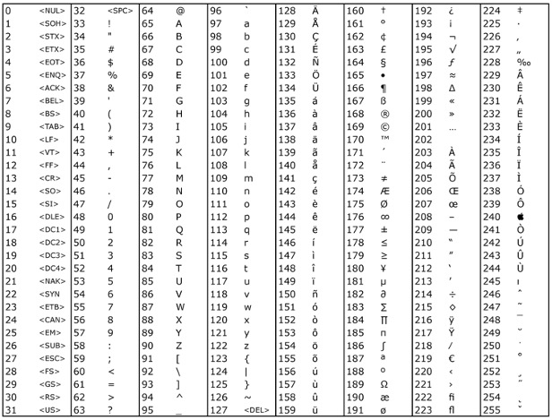
测序质量控制软件会通过碱基的Q值（Quality Score, Q）对碱基进行统计和过滤。
有两种格式Phred33和Phred64，分别代表碱基质量等于ASCII码值减去33或者64，例如：
Phred33： \(\operatorname{Phred}(\text{F})=70-33=37\)
Phred64 ： \(\operatorname{Phred}(\text{F})=70-64=6\)
Q值是错误概率（Probability of incorrect base call, P）的对数：
\[ Q=-10\log_{10}P \](3.1)
Q值为40则代表错误概率为0.0001；为30则代表错误概率为0.001；为20则代表错误概率为0.01；为10则代表错误概率为0.01。
知识问答 1：FASTA、FASTQ 与质量编码
1. 掌握FASTQ格式
1.1 格式有什么特点？
fastq内容格式有4行： - 第1行主要储存序列测序时的坐标等信息；
举个例子：
@ST-E00126:128:HJFLHCCXX:2:1101:7405:1133
1. @，开始的标记符号; 2. ST-E00126:128:HJFLHCCXX，测序仪唯一的设备名称;
3. 2，lane的编号;
4. 1101，tail的坐标; 5. 7405，在tail中的X坐标; 6. 1133，在tail中的Y坐标
- 第2行就是测序得到的序列信息，一般用ATCGN来表示，其中N用于荧光信号干扰无法判断到底是哪个碱基时的代表符号；
- 第3行以“+”开始，可以储存一些附加信息，但目前的测序fastq文件这一行一般是空的。
- 第4行储存的是质量信息，与第2行的碱基序列是一一对应的，其中的每一个符号对应的ASCII值是经过换算的phred值，可以简单理解为对应位置碱基的测序质量值，越大说明测序的质量越好。不同的版本对应的phred值范围不同。
1.2 什么是phred值，怎么计算？
是评估这个bp测序质量的值，测序仪通过判断荧光信号的颜色来判断碱基的种类，ATCG分别对应红黄蓝绿，信号强弱不同，在这种情况下对每个结果的判断的正确性都存在一个概率值，这个值被储存为ASCII码形式，转化方式如下：
将该碱基判断错误概率值P取log10之后再乘以-10，得到的结果为Q。
比如，P=1%，那么对应的\(Q=-10\log_{10}(0.01)=20\)（这个计算公式illumina平台使用，Solexa系列测序仪使用不同的公示来计算质量值：Q=-10log(P/1-P)）
把这个Q加上33或者64转成一个新的数值，称为Phred，最后把Phred对应的ASCII字符对应到这个碱基。
如Q=20，Phred = 20 + 33 = 53，53在ASCII码表里对应的ASCII符号是”5”
1.3 phred33 与 phred64是什么意思？
质量字符的ASCII值和质量得分的关系有如下两种：可以粗略分为 Phred+33和Phred+64，这里的33和64就是指ASCII值转换为Q该减去的数值。
在处理测序数据时，因为一些软件会根据碱基质量得分的不同做不同的处理，常要指定正确的编码方式，有必要对质量字符与质量得分的关系（Phred+33或Phred+64）作出正确的判断。当然，如果处理的是最近两年产生的测序数据，基本上都是Phred+33的，但从NCBI SRA数据库下载的较早的数据可能不同，需要注意。
2. FASTA格式的构成是怎样的，有什么样的规律？
- fasta格式用于储存序列，可以储存DNA、RNA和蛋白质序列，一般分为两个部分，第1行是以>开头的序列描述信息，包括数据库中的编号，序列名称，序列类型，剩余的为序列信息,以蛋白质和mRNA序列文件为例:
蛋白质fasta文件
- 以>开头
- sp|P69905 数据库编码
- HBA_HUMAN Hemoglobin subunit alpha 蛋白质名称
- OS=Homo sapiens 所属物种
- GN=HBA1 基因名称
sp|P69905|HBA_HUMAN Hemoglobin subunit alpha OS=Homo sapiens GN=HBA1 MVLSPADKTNVKAAWGKVGAHAGEYGAEALERMFLSFPTTKTYFPHFDLSHGSAQVKGHGKKVADALTNAVAHVDDMPNALSALSDLHAHKLRVDPVNFKLLSHCLLVTLAAHLPAEFTPAVHASLDKLASVSTVLTSKYR`
核酸序列文件（mRNA序列中的U均用T来代替）
- 以>开头
- gi|13650073 基因ID
- gb|AF349571.1 genebank编号
- Homo sapiens hemoglobin alpha-1 globin chain (HBA1) 基因名称
- mRNA, complete cds 序列类型
gi|13650073|gb|AF349571.1| Homo sapiens hemoglobin alpha-1 globin chain (HBA1) mRNA, complete cds CCCACAGACTCAGAGAGAACCCACCATGGTGCTGTCTCCTGACGACAAGACCAACGTCAAGGCCGCCTGGGGTAAGGTCGGCGCGCACGCTGGCGAGTATGGTGCGGAGGCCCTGGAGAGGATGTTCCTGTCCTTCCCCACCACCAAGACCTACTTCCCGCACTTCGACCTGAGCCACGGCTCTGCCCAGGTTAAGGGCCACGGCAAGAAGGTGGCCGACGCGCTGACCAACGCCGTGGCGCACGTGGACGACATGCCCAACGCGCTGTCCGCCCTGAGCGACCTGCACGCGCACAAGCTTCGGGTGGACCCGGTCAACTTCAAGCTCCTAAGCCACTGCCTGCTGGTGACCCTGGCCGCCCACCTCCCCGCCGAGTTCACCCCTGCGGTGCACGCCTCCCTGGACAAGTTCCTGGCTTCTGTGAGCACCGTGCTGACCTCCAAATACCGTTAAGCTGGAGCCTCGGTGGCCATGCTTCTTGCCCCTTTG
3. 什么序列适合用FASTA保存，什么序列适合用FASTQ保存？
单纯的蛋白或者核酸的序列信息一般用FASTA格式保存，而测序文件一般用包含仪器信息和测序质量的FASTQ格式保存。
3.7 读懂测序质量报告 FastQC
依据实验背景解释质控图，而非只看红绿灯。
测序数据的质量控制
测序原始数据是Fastq格式存储到文件，文件中包含序列的测序信息、本身碱基序列信息、碱基质量等内容。由于测序过程中存在很多或主观或客观的因素，例如样本污染或降解、接头污染以及测序过程中不可避免的测序误差等，都影响着测序数据的质量。对测序数据的质量控制可以减少数据噪音，保证结果的准确性。质量控制包括测序质量评估和高质量测序片段的获取。
质量评估软件FastQC
在进行测序数据的正式分析之前，需要对样本的整体质量进行评估，包括碱基质量评估、接头序列检测、重复序列评估等。
FastQC（https://www.bioinformatics.babraham.ac.uk/projects/fastqc/）是常用的fastq质量评估软件（ 图 3.13 ）。
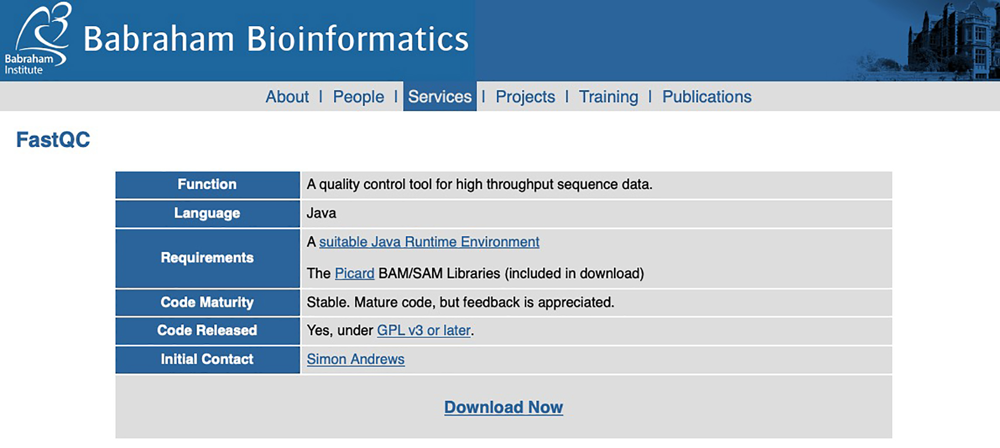
FastQC可以对每个位点碱基质量进行评估汇总、检测接头序列及重复序列，对GC含量分布、N碱基含量、长度分布进行统计，用网页展示结果。以下示例图片源于用FastQC对一个单端小RNA组测序样本的质量评估。
FastQC会给出一个测序数据总体的质量情况（ 图 3.14 ）。包括:
- 基本统计(Basic Statistics);
- 每个位点的碱基质量（Per base sequence quality)
- 每条reads的质量均值（Per sequence quality scores）
- 每条reads中四种碱基出现频率（Per base sequence content）
- reads每个位置的GC含量（Per sequence GC content）
- 每个位点不明碱基N的含量（Per base N content）
- 长度分布图（Sequence Length Distribution）
- 序列的重复水平（Sequence Duplication Levels）
- 突出的重复序列 （Overrepresented sequences）
- 接头序列情况（Adapter Content）
- 短序列重复片段（Kmer Content）
软件会对以上每一项进行评估，绿色对勾代表“pass”，黄色叹号代表“warn”，红色叉代表“fail”。
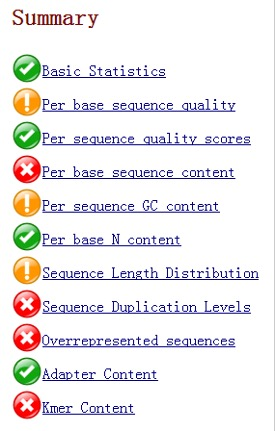
基本信息的统计能够快速了解样本的基本情况，例如文件类型、编码方式、总read数、序列长度等（ 图 3.15 ）。
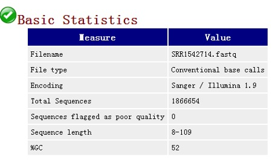
每个位点的碱基质量统计，能够快速了解样本的整体质量（见本小节的碱基质量图）。横轴代表碱基在reads上的位置；纵轴代表这个碱基的quality；Quality即为Fred值，计算公式见 公式 3.1 ，p为测错的概率，假设quality等于20，这个碱基出错的概率为0.01，假设quality等于30，这个碱基出错的概率为0.001；每一个碱基位置有一个箱型图，其中红线代表中位数，蓝线代表平均数；当然任意位置的下四分位数低于10或中位数低于25时FastQC软件会对此项评估为“warn”，当任意位置的下四分位数低于5或中位数低于20时FastQC软件会对此项评估为“fail”。
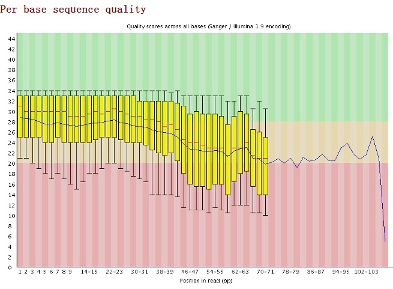
每条reads中四种碱基的统计显示碱基分布不均衡（ 图 3.17 ）。一般情况下，A、T、C、G四种碱基的出现频率是均衡的，当任一位置的A/T比例与G/C比例相差超过10%时FastQC软件会对此项评估为“warn”，当任一位置的A/T比例与G/C比例相差超过20%时FastQC软件会对此项评估为“fail”。需要注意的是，评估为Fail不代表样品一定不能 用，要结合具体测序对象来分析。例如图3.7中的AT含量较高，导致评估为Fail，这是一个小RNA测序样本，小RNA中有大量的miRNA，而miRNA主要通过与mRNA富含AT碱基的3’非编码区结合，行使其调控功能，因此小RNA测序样本中AT含量高是正常现象。
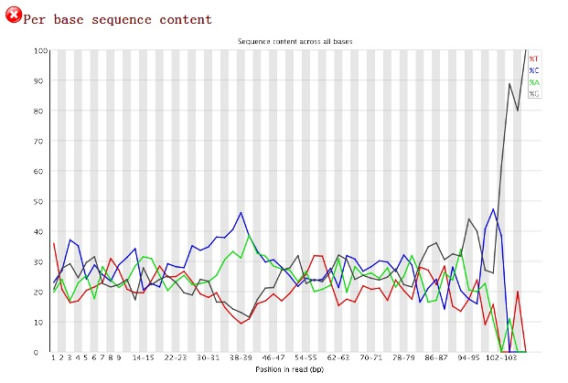
测序数据的质控与前处理
数据质控的目的
本节内容待补充。
生成FastQ测序数据报告
FastQC
本节内容待补充。
MultiQC
本节内容待补充。
知识问答 6：逐碱基质量图
问题描述
Hello 大家好！
通过前面的5个问题，我相信大家对Illumina测序，测序的储存文件格式，一些简单的建库原理已经有了一个初步的认识。那么接下来，我们就要用我们学到的知识去解决一些问题啦。
在实际操作和处理过程中，我们拿到的Illumina测序数据应该是.fastq.gz格式，其中gz表示的是使用gzip进行压缩，fastq表示使用fastq格式进行存储。获得数据的第一步，通常就是使用FastQC软件进行质控。
FastQC会对每一个输入的fastq.gz文件生成1个html网页和一个zip的压缩包。压缩包里是网页中包含的图片信息，因此我们只需要看网页里面整理好的内容就好。今天的问题围绕着FastQC的质控图来展开，请看下面2张图。
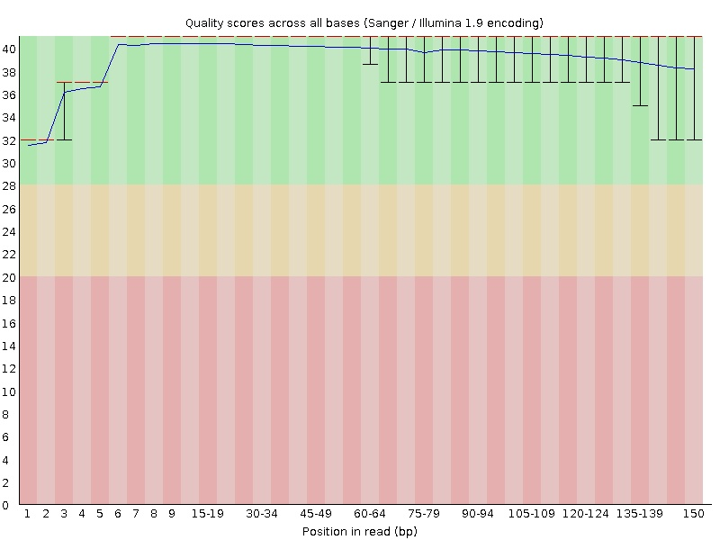
boxplot
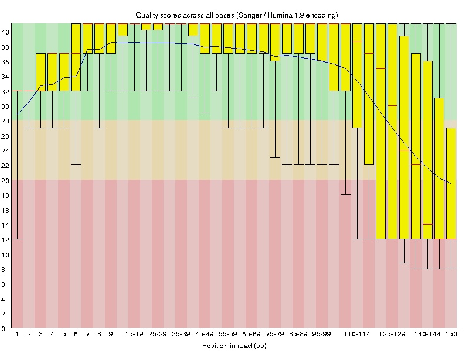
参考答案
1.图中的横坐标表示什么意思？
横轴是测序序列第1个碱基到第150个碱基.
2.图中的纵坐标表示什么意思？
纵坐标表示每一bp所对应的测序质量值，
前面讲过将该碱基判断错误概率值P取log10之后再乘以-10，
得到的结果再加上pherd值对应ASCII表所得到的值就是该碱基测序的质量值；
计算公式见 公式 3.1 。
即20表示1%的错误率，30表示0.1%的错误率；
3.图中的蓝色线是什么意思？
蓝色的细线是各个位置的质量值的平均值的连线；
4.图中的box 下面的bar ， 上面的bar，箱体的下沿，箱体的上沿，箱体内部的横线分别代表什么意思？
每1个boxplot，都是该位置的所有序列的测序质量的一个统计，
上面的bar是90%分位数；
下面的bar是10%分位数；
箱子的中间的横线是50%分位数；
箱体上缘是75%分位数；
箱体下缘是25%分位数；
- - - - - - - - - - - - - -
分位数一个简单解释是：
如果一组数的25%分位数是a，意味着a超过了这组数中25%数字的大小；
5. 图 3.18 与 图 3.19 最主要的区别在哪里？结合我们之前的问题，为什么会出现这种情况？
相比于reads1的测序结果， 图 3.19 中reads2测序质量均匀性差，准确率低；
主要原因是：
reads2的测序是在reads150bp测序完成后，
forward strands再通过1次桥式PCR合成reverse strands；在这之后再进行荧光测序；
测序质量差的主要原因是因为长时间测序结束后，合成每的活性降低，
导致合成时加不上一些碱基，最终同步性变差，主要属于phasing错误。
知识问答 7：碱基组成图
原题描述
Hello 大家好！
今天我们接着昨天的话题来继续进行与FastQC结果有关的提问。
我们昨天主要是针对FastQC结果中的boxplot进行了相关的探索，boxplot一般是认为FastQC几张必看的质控图之一。一般情况下FastQC的结果会包含下面几个图，而我们主要会看下图圈出来的几个。
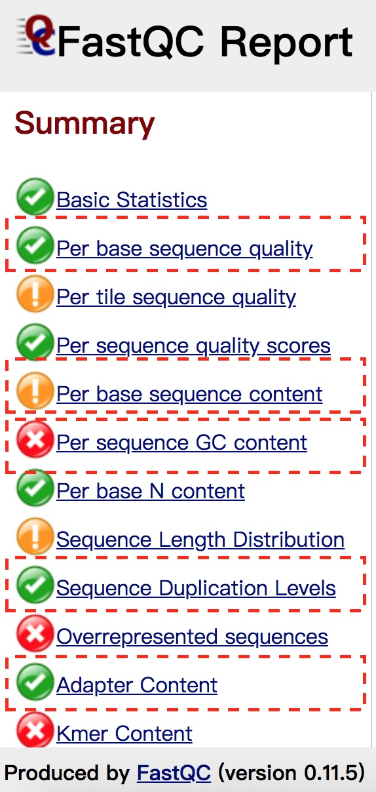
接下来的几天我们就把这些图来一个一个讨论清楚。
我们昨天讨论了“Per base sequence quality”，今天先来讨论 “Per base sequence content”
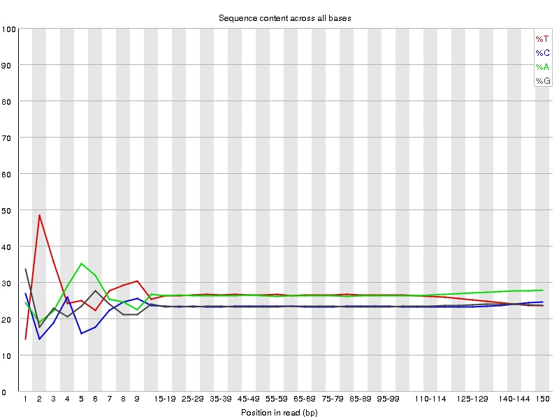
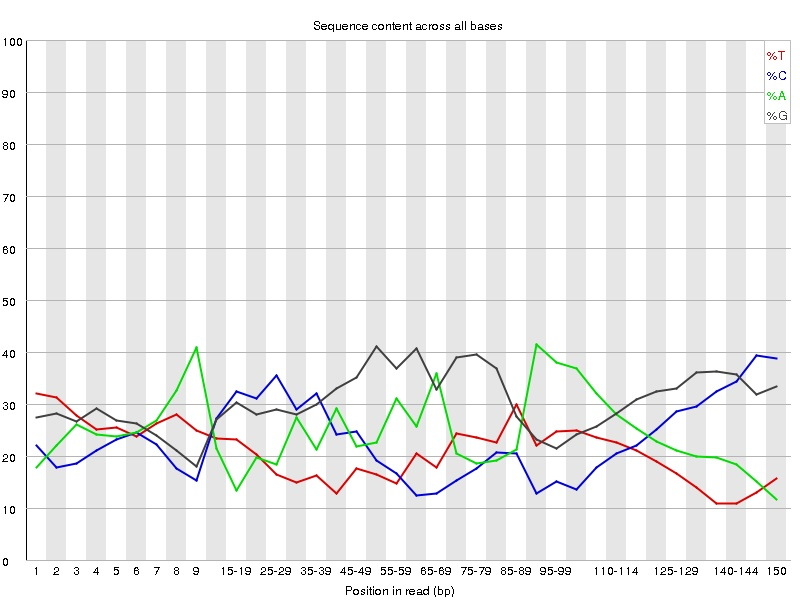
参考答案
1. 图 3.21 与 图 3.22 中横坐标是什么意思？纵坐标是什么意思？
横轴代表1到150bp;纵轴代表ATCG在该bp的百分比。
2. 图 3.21 是1个正常的DNA 全基因组测序结果，为什么前面的几bp线是波动的？后面的线是平衡的？
根据Wason-Crick配对原则，A和T应该相等，G和C应该相等；
但是一般测序的时候，刚开始测序仪状态不稳定，很可能出现不平衡的情况。
像这种情况，
如果测序的得分很高，可以不进行trim开始部分的序列信息；
如果测序得分很低，需要进行trim开始部分的序列信息。
3. 图 3.22 是1个特殊RNA建库的测序结果，4条线出现波动更可能是什么原因造成的？
RNA是单链核苷酸，GC或AT的含量并没有直接的关系，
4条线的波动是由于模板中ATCG的量不同导致的（就是所谓GC不平衡）。
4.在 图 3.21 中你能不能看出一个恒定的量？（提示，同一物种间相同，不同物种间一般不同）如果能看出来，这个量是什么？数值大约是多少？
GC含量在同一物种中是一个恒定值。图中GC总体比例大约在42%（目测）。
知识问答 8：GC 含量分布
原题描述
Hello 大家好！ 我们又见面了！
最近总搞FastQC报告的研读，是不是都看烦了？没关系，我们再搞最后2次，就进入下一个主题啦！昨天的问题中，我们告诉大家FastQC的报告中最重要的几张图都在下面用红框框出来了。

今天我们来研读2张图。 第1张图是：Per sequence GC content
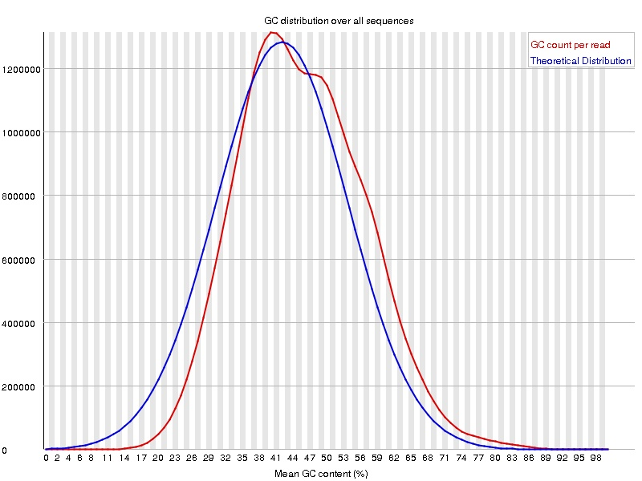
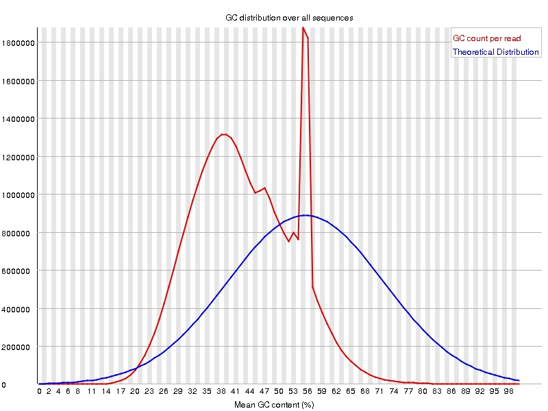
第2张图是：Sequence Length Distribution
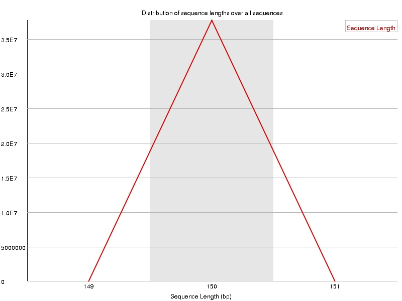
参考答案
1. 图 3.24 与 图 3.25 中的横坐标是什么意思？纵坐标是什么意思？
横轴是0 - 100%； 纵轴是拥有相对GC含量的序列所对应的数量.
2. 图 3.24 中是human全基因组测序，结合昨天的问题，那么peak的中间大约应该在多少？
上一次的问题中GC总体比例大约在42%左右，所以如果这是human全基因组测序，那么peak在横坐标对应42的位置比较好。
3. 图 3.25 与 图 3.24 有哪些显著的不同？造成这些不同的原因有可能是什么？遇到这个问题，我们通常应该做些什么？
图 3.24 有一个peak,并且与理论值（蓝线）基本重合；
而 图 3.25 有两个，并且其中一个peak与蓝线相差很多，当红色的线出现双峰，基本是混入了其他物种的DNA序列。
遇到这个问题，首先进行mapping统计有多大比例reads map到了目标参考基因组上，如果比例非常低说明污染严重，数据不可用；
如果大部分reads都map成功，剩余一部分可以通过blast检查是混入了哪些污染物，过滤掉这些reads就可以，不影响后续的分析。
4. 图 3.26 的横坐标是什么意思？纵坐标是什么意思？
横坐标代表序列长度，纵坐标代表长度为某一bp的序列所对应的数量。
5. 图 3.26 是刚下机的fastq数据进行FastQC 结果图，有什么特点？为什么会出现这样的结果？如果对刚下机的fastq数据进行cutadapter， 图 3.26 还会是这样的结果吗？为什么？
测序仪成功下机的数据都是整齐的一定长度的序列，比如最常用的illumina X Ten是双端150bp；
测序过程当中产生的不足150bp的序列在下机时已经被过滤掉了；
如果进行cut adapter，序列的长度将不一致，因为reads中包含信息的insert的长度并不完全一致，
150bp的测序长度是否已经包含了adapter的序列是未知的，因此cutadapter之后的reads长度不同.
能力扩展题：
6.请想办法，计算Human genome 19（hg19）每一条染色体的GC含量。
思路1
- UCSC或Emble下载Human genome 19（hg19）染色体序列；
- 直接把下载的序列使用Fastqc检测序列“质量”，
- report中Sequence content across all bases会显示GC结果。
思路2
- UCSC或Emble下载Human genome 19（hg19）染色体序列；
- 写Python程序依次读取序列内容；
- 统计每一条染色体的GC含量；
- 具体的代码及方法可以参考知乎Live
知识问答 10：接头与 k-mer 报告
原题描述
Hello大家好！
我们又见面了！今天是我们的FastQC中最后1次提问啦！今天，我们要聊得是adapter与kmer的问题。
我们在生物信息学100个基础问题 —— 第5题 测序建库的adapter 的时候讨论过adapter的问题，我们知道adapter的最主要的作用是为了能够与flowcell连接，方便进行桥式PCR。那么我们的fastq文件中到底含不含adapter呢？FastQC报告就能告诉我们。
同时呢，我们今天还会讨论kmer的问题，相关的报告FastQC也会输出出来。 Part I adapter部分
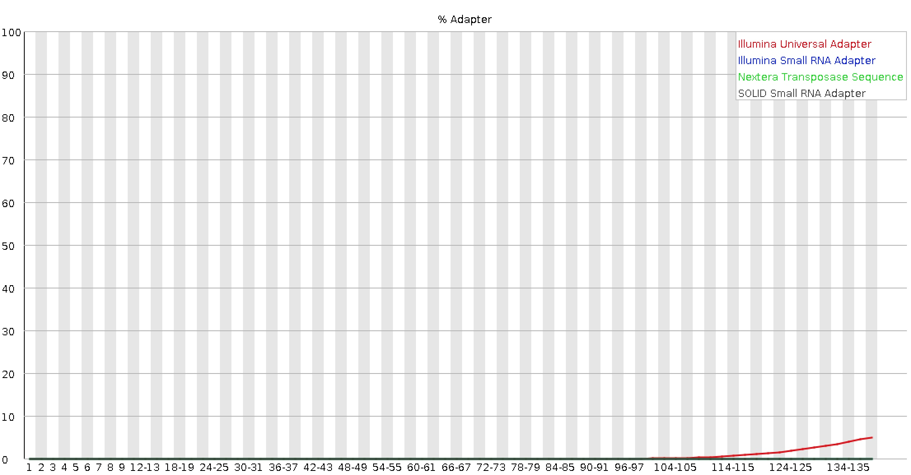
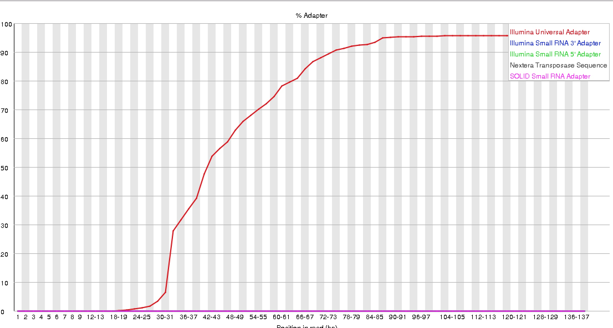
Part II kmer部分
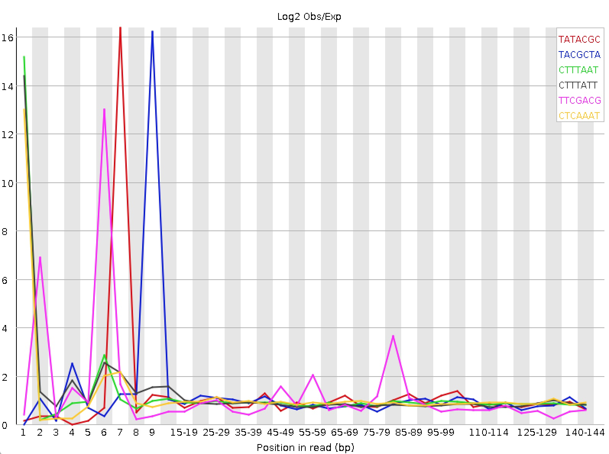
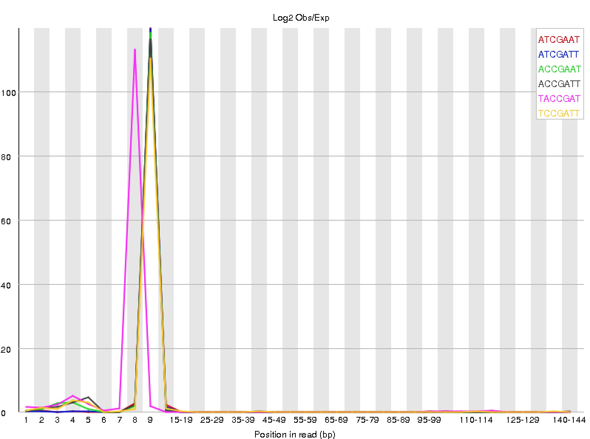
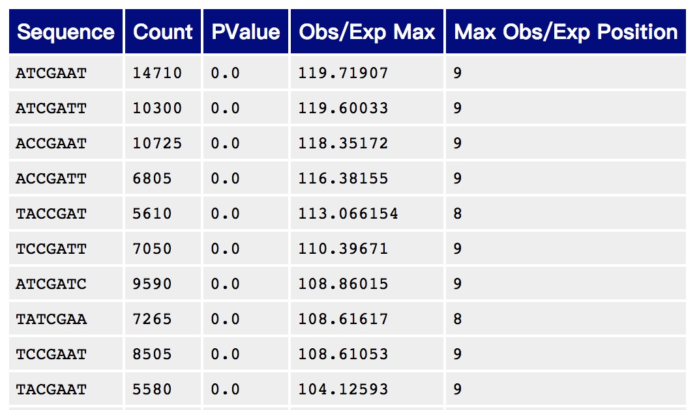
参考答案-关于adapter的问题：
1.Illumina的通用adapter序列是什么？ 图 3.27 与 图 3.28 中的各种不同颜色的图例是什么意思？
Illumina Paired End Adapters (cannot be used for multiplexing)
Top adapter
5′ ACACTCTTTCCCTACACGACGCTCTTCCGATC*T 3’
Bottom adapter
5′ P-GATCGGAAGAGCGGTTCAGCAGGAATGCCGAG 3’来源
http://bioinformatics.cvr.ac.uk/blog/illumina-adapter-and-primer-sequences/
不同颜色的图例代表不同的测序通用的adapter；
如果在当时fastqc分析的时候-a选项没有内容，则默认使用图例中的通用adapter序列进行统计。
2. 图 3.27 与 图 3.28 中的横坐标与纵坐标分别是什么意思？
横坐标代表reads中的位置，纵坐标代表adapter序列含量的百分比。
3. 图 3.27 与 图 3.28 中最显著的差异是什么？如果两者都是RNA-Seq的数据，哪个可以继续下游分析，哪个不能够进行下游分析？为什么？
参考答案-关于kmer的问题：
4.kmer就是一定长度的序列，比如AATTCCGG就可以叫做8-mer。那么 图 3.29 余 图 3.30 中的横坐标什么意思？纵坐标什么意思？
横坐标代表短序列的长度，纵坐标代表某长度的短序列在所有reads中所出现的频率百分比。
5. 图 3.29 与 图 3.30 中哪个kmer问题比较严重？为什么？
图 3.30 的问题更严重，因为该图中kmer的出现位置集中且数量较多，可能是加入了random barcode,出现了duplication问题。
6. 图 3.30 中是在reads的5’端加入了约10bp左右的随机序列，结合 生物信息学100个基础问题 —— 第9题 读懂FastQC报告中的duplicate问题 这样做的目的是什么？
一般在进行RNA—Seq测序时是不会进行remove duplication；
但是一些比较特殊的建库流程比如说单细胞RNA-Seq测序时PCR扩增轮数较多，可能出现大量的duplication；
对于这些建库方法，通常需要添加random barcode，然后需要根据random barcode进行remove duplication。
7.思考题： 图 3.31 是FastQC生成的kmer是否显著的统计报告。其中的每一列是什么意思？这个统计显著性检验计算的p-value是使用什么方法计算的？
- 第一列：kmer内容
- 第二列：kmer在序列中某一位置出现的观测数量
- 第三列：二项分布统计检验P-value
- 第四列：kmer在某一位置的观察值与理论值的比值
- 第五列：观察值与理论值比值最高值出现的位置
3.8 去除测序接头
理解何时修剪、如何保持配对关系以及如何验证处理效果。
用质量控制软件获取高质量测序片段
对评估后确定数据质量合格的样品，进行进一步的分析。使用Trimmomatic、Cutadapt、Fastx-toolkit、NGSQC等去除数据中的低质量测序片段、接头序列等，以获得高质量测序片段，即clean reads。对于低质量的reads，例如Q值过低、含N过多的reads片段要进行切除或过滤，接头序列包括用于区分DNA片段来自哪个样本的barcode序列、DNA片段的PCR扩增序列，以及DNA片段与测序仪 lane结合的序列。需要切除这部分序列。
Trimmomatic采取滑动窗口的方式对reads质量进行评估，如果窗口碱基质量均值小于指定值，则将该read去除，还可以用于reads的修剪和接头的去除、去除reads 3‘/5’端指定长度，或者质量低于指定值的碱基。Cutadapt偏重对接头的处理，存在于reads内部或者两端的5’/3’接头的去除，设置接头错配率、接头是否含有indel以及在接头中设置通配碱基N等，去除含N过多的reads和低质量碱基。Fastx-toolkit可以对碱基质量进行过滤以及统计。
常用的数据前处理办法及思路
去除测序接头
- cutadapt
- trim galore
知识问答 11：接头处理的参数与输出
问题描述
Hello大家好！我们又见面了！
通过前面的生物信息学10个基础问题，我相信大家对测序的基本原理，FASTA与FASTQ格式以及FastQC的质控报告都有了一个清楚的认识。那么接下来，我们就要进一步学习，学习如何把原始的FASTQ测序结果一步一步的准备成可以用来比对（mapping）的质控过后的FASTQ。
在生物信息学100个基础问题 —— 第10题 读懂FastQC报告之adapter与kmer中，我们知道，测序结果中可能会有若干条序列存在adapter的信息，而adapter的信息一般是不在基因组上存在的。所以，在比对之前如果不把adapter去干净，我相信你会得到1个非常非常低的mapping rate。
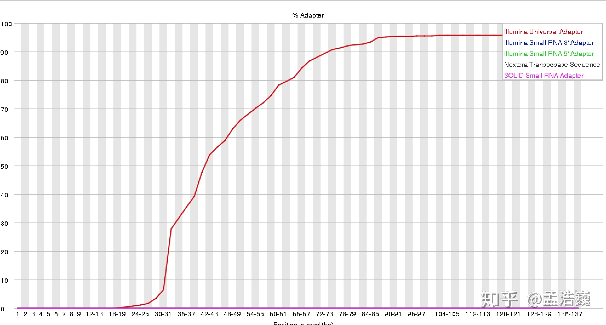
通常情况下，我们都是使用cutadapt这个软件进行adapter（接头）序列的去除。cutadapt这个软件不但支持单端序列，还支持双端序列的切除，同时还支持gz格式的自动压缩与解压缩。1个常用的切除命令类似： 在linux 命令行模式下
cutadapt -a ADAPTER_FWD -A ADAPTER_REV -o out.1.fastq -p out.2.fastq
reads.1.fastq reads.2.fastq- -a是第1个文件的adapter序列
- -A是第2个文件的adapter序列
- -o是第1个输出文件
- -p是第2个输出文件
- reads.1.fastq 是第1个输入文件，也就是双端测序中的read-1
- reads.2.fastq 是第2个输入文件，也就是双端测序中的read-2
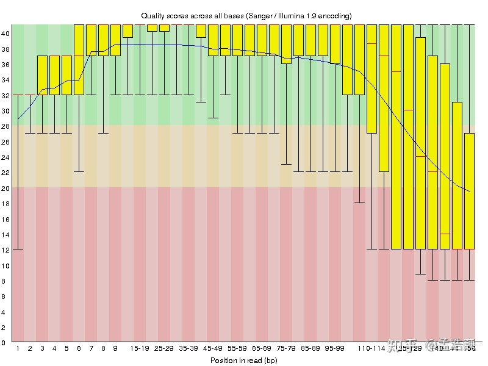
那么我们今天需要思考的问题，与切除adapter的具体内容有关。
1. cutadapt中-a/-A 参数与-g/-G参数分别代表什么意思？Illumina测序过程中，一般不会用到哪个参数？
-a 后面跟一段核苷酸序列，代表单端测序中3’端需要去掉的adapter；
-A 代表双端测序中，read2的3’端需要去掉的adapter；
注意：如果是双端测序数据，-a针对read1起作用；
-g 后面也分别是一段核苷酸序列，代表单端测序中5’端adapter序列;
-G 的用法可以类比-a/-A，是针对reads2的5’端的adapter；
通常情况下，Illumina测序过程中5’端不会测出adapter序列，所以-G/-g一般不会被用到。
2. cutadapt可以过滤一些非常短的reads，请解释其中-m 参数是什么意思？为什么要过滤一些非常短的reads？
-m 后面跟着是一个数字；
意思是当每条read切完adapter后如果序列长度低于这个数字就会被舍弃，
因为如果序列长度过短，则这条read不宜被用于后续的mapping。
3. 在测序的过程中，我们经常发现一些序列的3’端的测序质量不太好（如 图 3.33 所示），即使去掉adapter以后还是需要把低质量的序列再去除1次，从而保证后续的mapping质量。cutadapt可以使用一些办法来去除3’端质量不太好的序列。请说明用哪个参数来设置相关的cutoff，并简要说明cutadapt对read质量判断的策略与方法。
使用-q命令可以再在cut adapter时将测序质量值差的序列去掉，设定一个质量值，低于该分数的bp将被
切掉，具体命令是:
cutadapt -q 10 -o output.fastq input.fastq
需要注意的是,-q后面的数字表示质量值的低阈值，如果FASTQ文件质量值采用pherd33标准，则不用备注；
但如果FASTQ文件采用phred64标准，则需要在代码中添加 “–quality-base=64”。
- - - - - - - - - - - - - - - - - - - -
cutadapt 去除3’端低质量序列的核心算法
- - - - - - - - - - - - - - - - - - - -
质量值的计算公式见 公式 3.1 。
假设我们有13bp的序列，其序列和phred值分别为：
A,T,G,C,C,G,T,A,C,C,G,G,T,T,A
42, 42, 41, 41, 40, 26, 27, 8, 7, 11, 4, 2, 3假设我们的-q参数选择10，首先先对所有序列的质量值减去这个-q后面的参数，结果：
32, 32, 31, 31, 30, 16, 17, -2, -3, 1, -6, -8, -7随后从3’方向向5’方向进行累加，结果如下：
164, 132, 100, 69, 38, 8, -8, -25, -23, -20, -21, -15, -7
则从3’到5’遇到累加结果的第1位大于0的位置即为保留的第1位；
所以最终保留cut的结果为：
A,T,G,C,C,G,T,A--cut here--C,C,G,G,T,T,A这样做的好处是可以得到比较稳定的高测序质量值，防止因为3’端某个质量值突然提高而终止去除。
3.9 其它常见的测序数据clean操作
针对FASTQ文件的其他操作 （seqkit）
trim到相同长度
本节内容待补充。
随机筛选
本节内容待补充。
等等
本节内容待补充。
知识问答 12：长度整理与预处理流程
问题描述
Hello大家好！我们又见面了！
上一次我们说到了cutadapt软件的使用问题，其中我们着重强调了1个参数-m，不知道大家还有没有印象。今天我们问题就是要使用-m参数和另一个工具联合的一个妙用。不过在这之前，我们还得先介绍1个工具箱叫fastx_toolkit.
fastx_toolkit是一个系列内容的软件包，其中主要的内容是对比对前的fastq文件做质控。比如切掉一些不要的内容（fastx_trimmer），比如FASTQ与FASTA格式的转换（fastq_to_fasta），比如分单链测序的index（fastx_barcode_splitter）等等。我们今天主要是给大家说一下fastx_trimmer的用处。
fastx_trimmer主要是切掉一些fastq中你不想要的序列，比如有些序列5’端有若干bp的质量不好的或者碱基不稳定的部分；或者是5’端有一些用来去重复（duplicate）的random barcode（如 图 3.34 所示）；还可能是3’端一些质量不好的碱基。
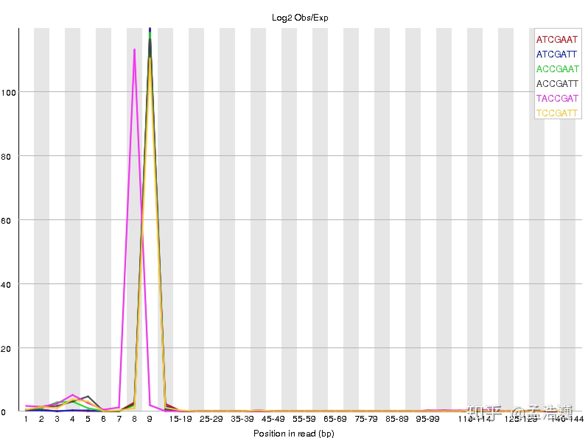
这里我再给大家1张图，就是之前我们展示过的Human普通的RNA-Seq测序的adapter分布图（ 图 3.35 ）。
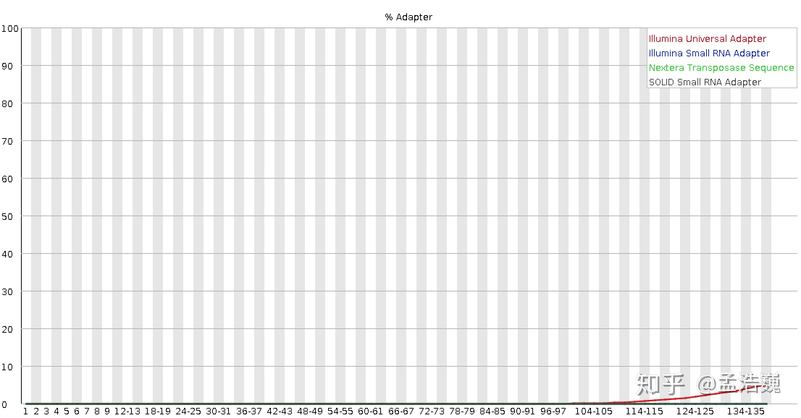
在实际数据分析与处理的过程中，会有下面几个要求：
1. fastq文件中的adapter肯定是需要去掉的;
2. 一些头部的random barcode也是需要去掉的；
3. 在进行一些特殊的分析的时候，还需要保证所有的输入序列长度完全一致，不能长不能短，必须整整齐齐在一起（比如RNA-Seq的可变剪切分析经常有这个要求）。
那么我们今天的问题就是——
假设你有一个RNA-Seq测序文件需要进行可变剪切分析，你需要达到的要求是：
1. 处理过后的fastq文件中不包含adapter序列；
2. 处理过后的fastq文件中的开头10bp是random barcode也需要去；
3. 最后得到的序列长度完全一致（不满足上述要求的扔掉）；
假设我们的输入文件是：input.fastq 假设我们的操作系统是：Linux Ubuntu 其中的adapter序列是：AGATCGGAAGAGCGTCGTGTAGGGAAAGAGTGTAGATCTCGGTGGTCGCCGTATCATT 请参考cutadapt与fastx_trimmer这两个软件的使用说明，设计处理路线图。如果有可能，请给出相应的参数。
为了达到最终目的，处理过程主要分为3步：
第1步：
使用fastqc获得序列3’端adapter以及5’端random barcode的信息；
第2步：
使用cutadapt去掉3’端的adapter，务必注意需要使用-m参数，只保留一定长度以上的序列；
第3步：
使用fastx_trimmer去除5’端不想要random barcode，同时截取相同长度的序列，
保证最后得到的序列长度完全一致。
参考代码及参数如下：
# step 1, FastQC
fastqc -q -t 3 -o ./FastQC_result ./input.fastq
# step 2, cut adapter
cutadapt -25 -m 125 \
-a AGATCGGAAGAGCGTCGTGTAGGGAAAGAGTGTAGATCTCGGTGGTCGCCGTATCATT \
-o input_cutadapt.fq.gz input.fastq &
# step 3, trim
zcat input_cutadapt.fq.gz | fastx_trimmer \
-f 11 -l 125 -z -o ./input_cutadapt_trim11_125.fq.gz
# 经过上述3个步骤，可以获得长度统一为115bp的序列！